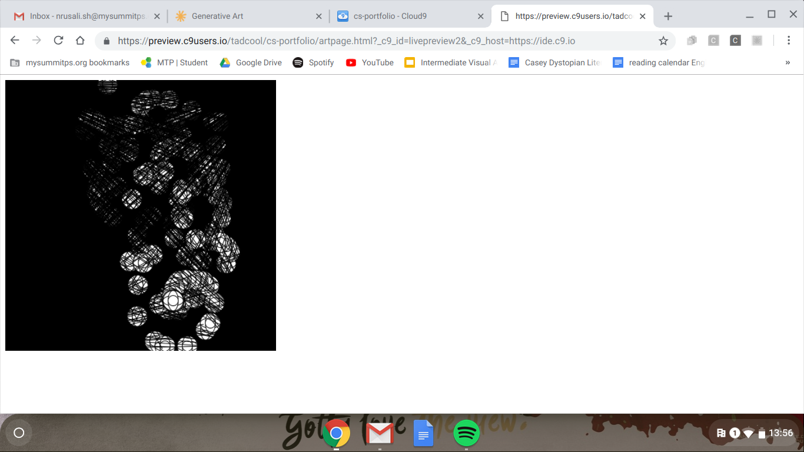

I created this page because I’m very close to my mom and she loves philosophy and something that she talks about a lot is how life is always fading. We believe in the idea of reincarnation so while creating my code I was thinking about doing something like that. Whenever you click, you get a second chance to see the colors again before it quickly gets consumed by the black lines covering the screen. I also gave the user a choice on what color they want to see, this is why depending on where you click the background changes color. I asked my mom on some ideas of what to do for my art page and she began to talk about the meaning of life and stuff like that. I believe that my art piece, while simple, accomplished my goal. I also used some code from previous projects to add to the symbolism and to keep a theme going in my project (keep the same colors throughout the project). The circles that track your mouse also represent the people in your life that eventually fade away over time.
If you want to learn more about my Art Page then click here